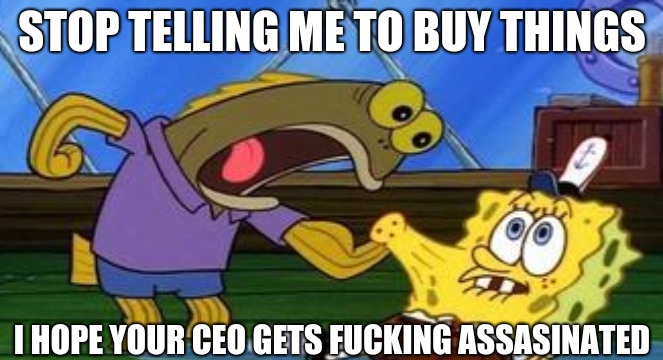

Corpserations
published: 2020-12-15
For a few years now, but even more since Corona-chan started her world tour, I have been getting random headaches in the afternoon. Not strong enough to warrant popping any pills, but enough to make me hesitate before I read a book or play a game or pull out my laptop- before I do anything to keep at bay the inevitable boredom that sets in. Like a storm cloud looming in on the horizon, nothing has happened yet, but the visible promise of gloom to come curbs all enthusiasm to do anything of value. And so I sit in my room, staring at the wall, mind running in circles. There is nothing I have the desire to do, or there is, and I can't bring myself to do it- and even if I did, the storm cloud blocks out the sun, my mental capacity taking a nap.
And so I do the same.
I am not adept at meditating. I lie down on my back on my bed, palms down and pressed against the sheets. And I wait. And I wait. And before I know it, it is several hours later, and I am drifting out of a curious state of mind: not quite asleep, but definitely not awake. It is in this state that, upon waking up from, I have had many of my out-of-body experiences. But not today. All that greets me is a strange sort of nothing inside, all the people inside my body quelled in a reverse choir that sings silence, and the steady hum of warmed air flowing through the vents in the walls so my family does not die from hypothermia from this winter that is not. (There is no snow on the ground, but it is still frigid.)
Drifting up from this half-conscious state, images float across my eyes without inhibition, without the mental voice that screams to stay on task, to not be distracted. An alligator wearing pants. A robot with a chicken face. One of my brothers wearing a plate on his head as a hat.
A magazine ad of Mario and the Kool-aid Man standing together on a blank white background, the text underneath them reading, "Buy our products or we'll cut off your testicles, retard."
That's it. That's all there is. No logos. No subtle manipulation. No pandering to fantasies about being rich or intelligent or sexy. Just a corporate mascot and a blatant threat.
Their eyes look dead inside.
My eyes look dead inside when I lose a match in Splatoon for the fifteenth time. It is not like there is anything better to do in the game than beat up other people online: the story is lackluster, essentially the same gameplay as online but with a story that drags out for far too long bolted onto the end, and I am not shelling (pardon me) out twenty dollars for... more customization options, which I'd only get after slogging through another story mode. And even when I manage to win, there are only so many times one can yell "AHHHSOWHENYA" (or however the intro to The Lion King goes) when jumping down to a lower level of Moray Towers and still find it funny.
There are only so many stages.
There are only so many customizaton options: gender, eye color, skin color, and the types of pants one wears. Any more, and one has to go into one of the little in-game shops to buy clothes. Which are all stamped with a little logo and the name of the in-game corporation that made it, as if the player is supposed to care. Without these clothes, every character online would literally be the same: same head model, same body model, same small random selection of gender-locked voices.
The corporatism is stifling. I hide away from the world-as-advertising for an hour or so only to hop into a fantasy society where the only thing to do is shop and kill people with the things you just bought. (In all fairness, I never intended to play it myself; I bought it when it was on sale because my brothers desperately wanted to play it and I wanted something to lord over them.)
I grow tired. I grow into a corpse in the land of the dead, the land of Corpserations.
I know not if March has finally caught up to me and I am going stir-crazy from the lockdowns or if it is just time for my yearly histrionic Extremely Online-flavored doomerism. But I am living in a system that is bumping up against its limits. Every natural resource has to be commandeered and then destroyed by miniature governments who haven't yet built physical militaries to coerce people into becoming dependent on their products. Every facet of life has to be commodized, packed into a neat product, sellable to the lowest common denominator. Everything posits itself as an alternative to identity, as the salve to heal my voided heart. Everything is a chance to advertise. My parents with their decorating decisions, one brother who blasts cartoons at full volume at every meal, another whose near-sole topic of conversation is some piece of pop culture or another.
How I wish I had some kind of filter to permanently block the constant cognitive attack. My RSS feed reader, a veritable warzone, is already a much more tolerable place to inhabit once I filter out all the shit about, for example, Kingdom Hearts or girlbossified Kamala Harris or countless fandom zines I have already decided I am not interested in buying. (Sorry, but your prized "OTP ship" is probably boring and void of chemistry.) But, if I remember correctly, there was a Black Mirror (or some other "technology bad" show) episode about that, where people could "block" each other in real life and they'd practically disappear. What technology would be required to produce such an effect? What would the long-term mental consequences be? If it were hacked... One would never be able to trust that their version of reality wasn't being adulterated by some outside entity ever again.
Every night I have to chastise myself for the runaway thoughts where I pretend that I made it big, that I have to market MayVaneDay Studios like other video game companies do on social media. I am structuring my works, my website, to purposely not "make it big": I have never hired an editor or graphic designer to polish my rough edges; I do not use "flashy" web frameworks; I do not run advertisements on my site or buy ads on other sites; I eschew social media (although I unfortunately recently had to make a throwaway Discord to participate in a zine; details coming later). I do not want delusions of corporate grandeur steering my decisions. But in this dead world, everything, and I mean everything, is a brand. Everything exists only to be consumed in a desperate attempt to stitch together an artificial identity.
To bastardize a popular Bible quote, what good does it do me if I gain the world if it costs me my soul? What good does it do my life if I become a Corpseration, a reanimated entity with a human-like egregore but no actual human spirit within?
I do not mean to "fedpost", but I feel a tsunami of schadenfreude wash me over whenever some misfortune befalls a celebrity, a massive business, a politician, some member of the global elite. For some measure of the misery I feel from the constant cognitive assault they lob at me: may it be reversed a thousand times back!

CC BY-NC-SA 4.0 © Vane Vander